Patient registration, appointments, wards and beds, billing, laboratory, pharmacy, theatre, stores and a patient portal, with access that follows each person's role and an audit trail behind every change.
Book a live demo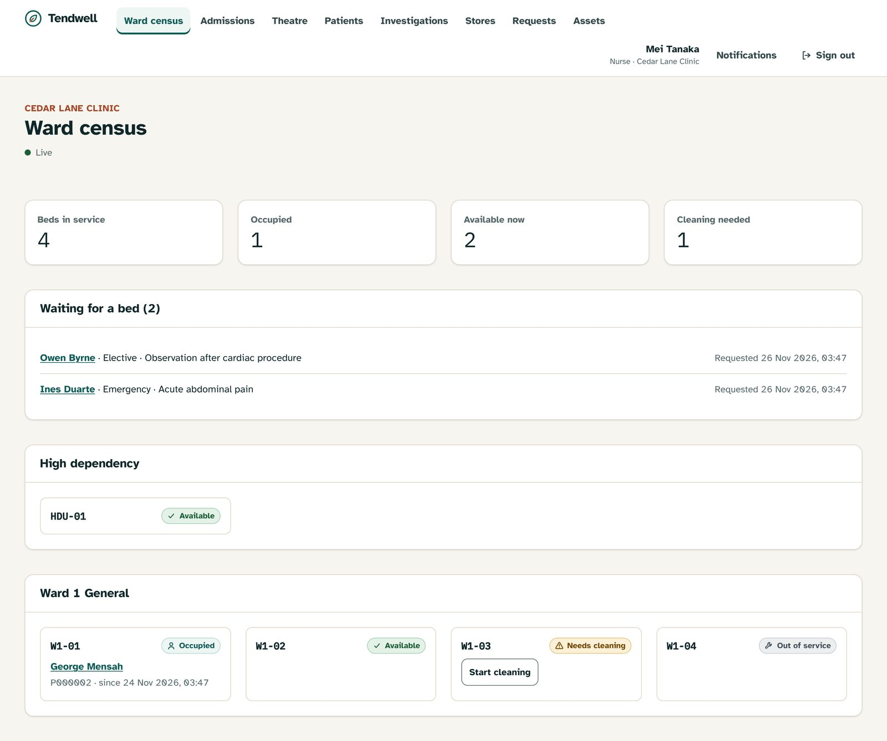
Live bed state, who is waiting, and cleaning status. Two nurses can never be given the same bed.
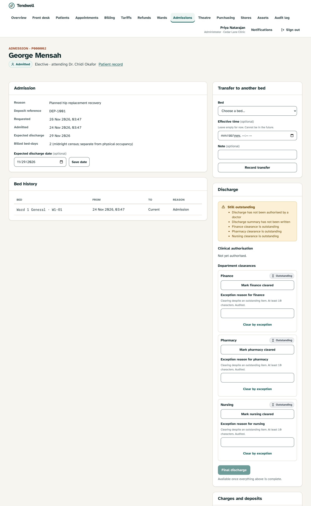
Doctor authorisation, finance, pharmacy and nursing clearance, with audited exceptions. Emergencies are not held up by payment.
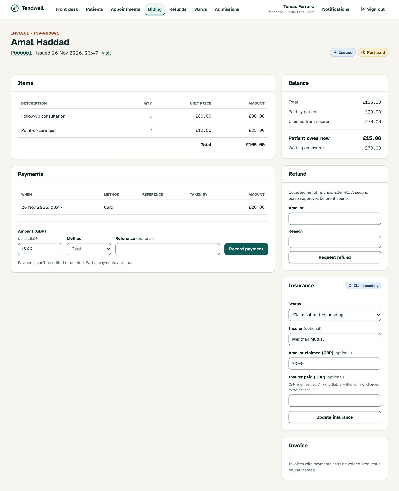
Tariff versions, charges that keep the price they were added at, deposits, part payments and refunds that need a second approver.
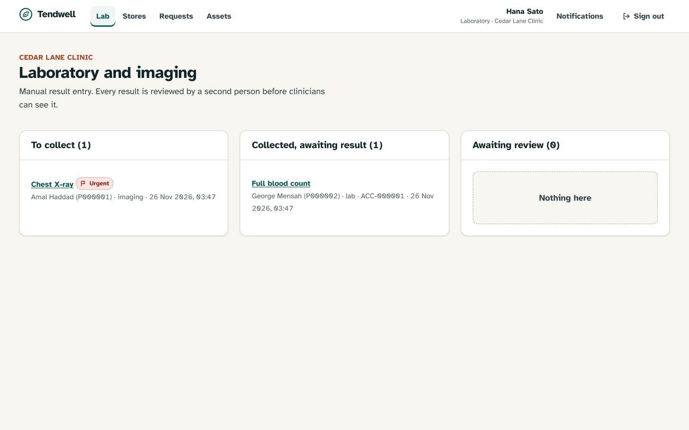
Orders, accession numbers, a second-person review before release, amendments as new versions and critical-result acknowledgement.
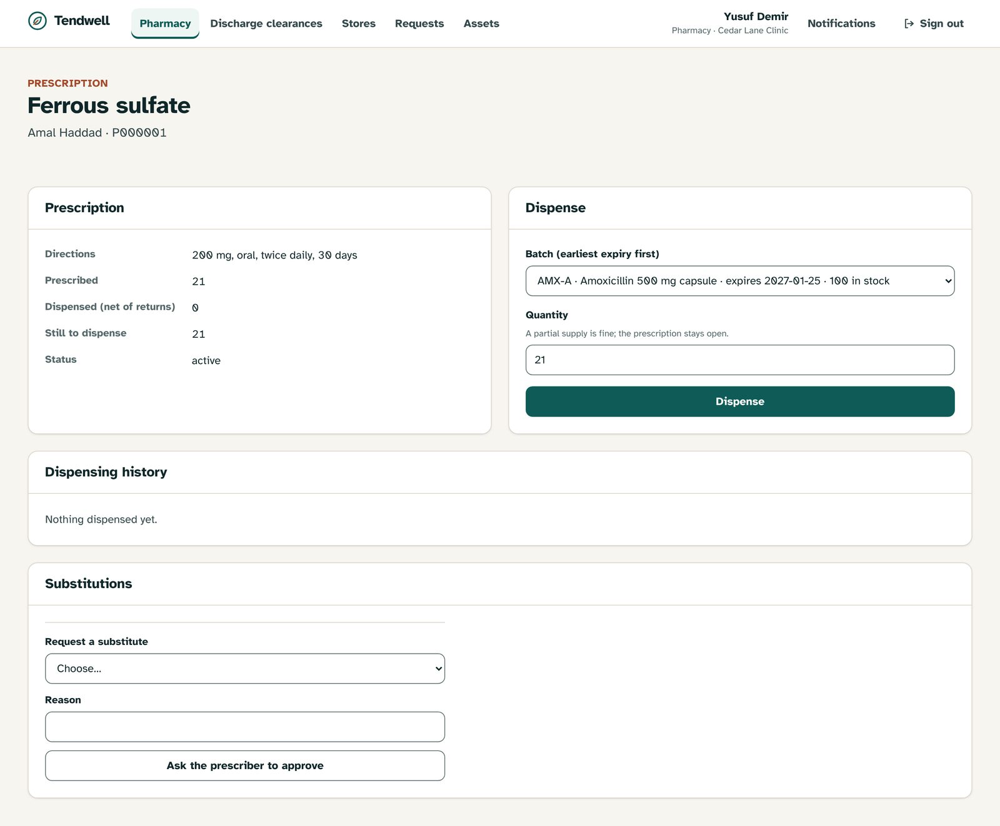
Earliest-expiry stock first, expired and recalled batches blocked, partial supply, substitutions the prescriber approves.
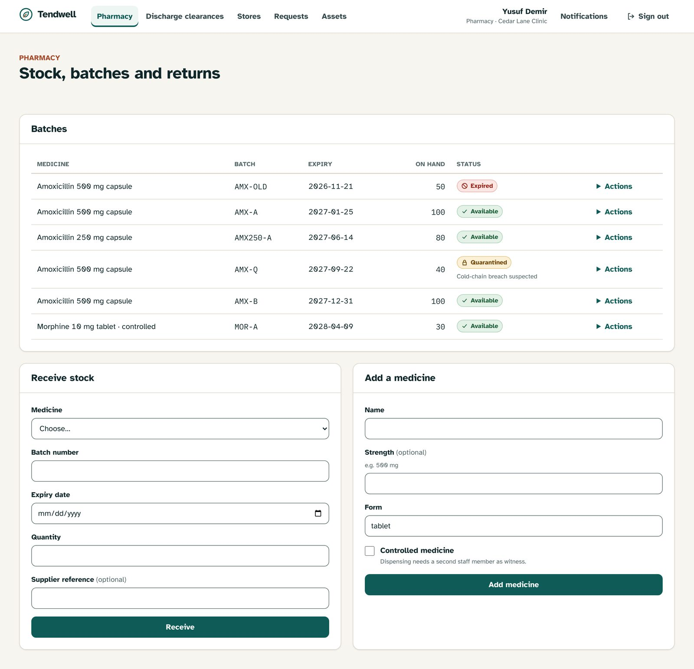
Batch and expiry tracking, quarantine, recall with prescriber alerts, and returns reviewed before restocking.
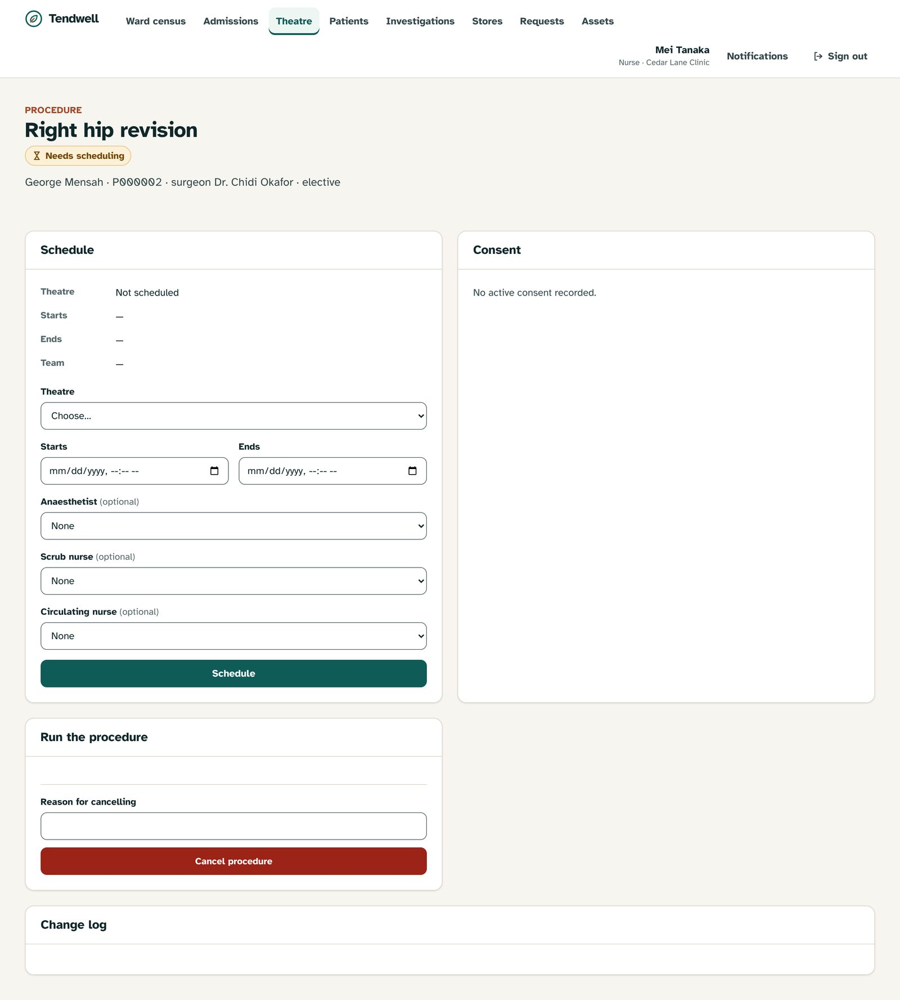
Room, staff and patient clashes are refused. Checklist, consent evidence, versioned notes and a visible change log.
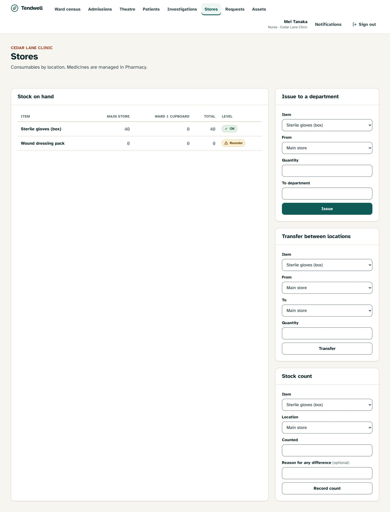
Requests and orders each approved by a second person, goods received against orders, issue, transfer and counts.
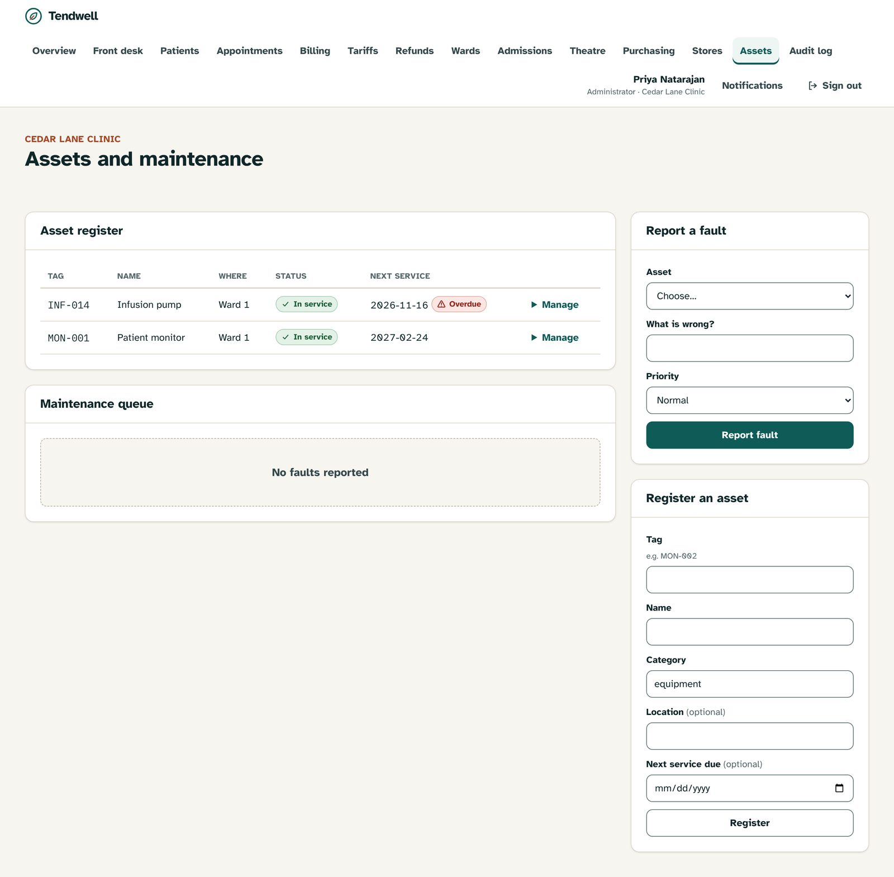
Service dates, fault reports and downtime tracking.
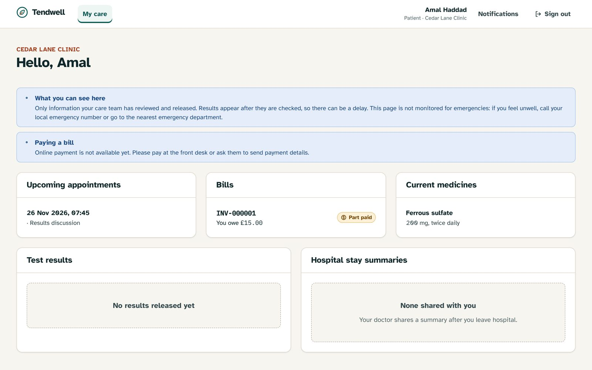
Patients see only what the care team has reviewed and released.
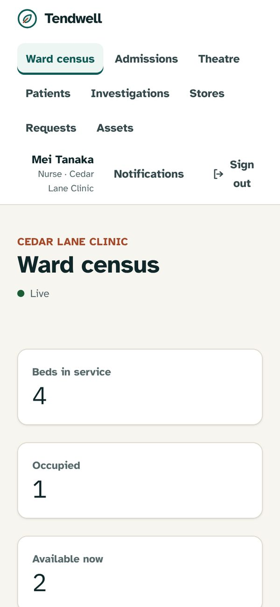
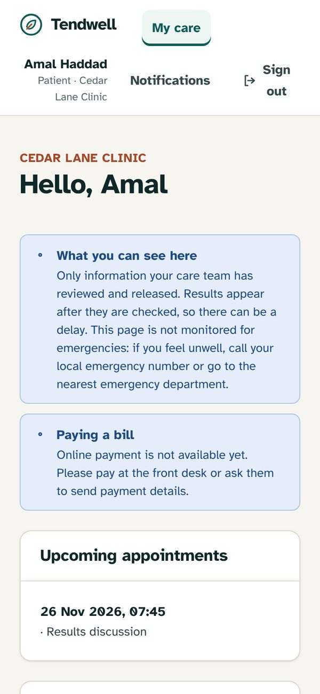
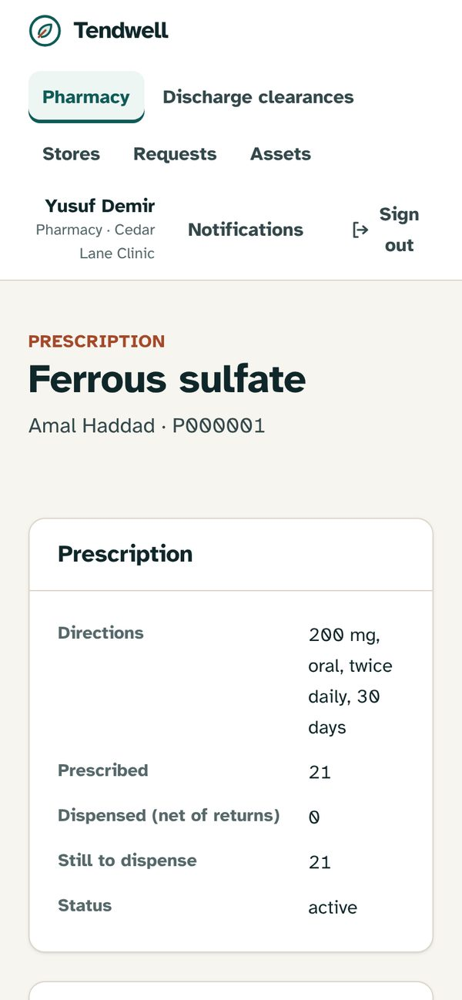
All screens show synthetic demonstration data; no real patients. Clinical rules and approval policies are configured and approved by each hospital. This system supports, and does not replace, clinical judgement. Online subscriptions, patient online payment and multi-hospital groups are not yet available.